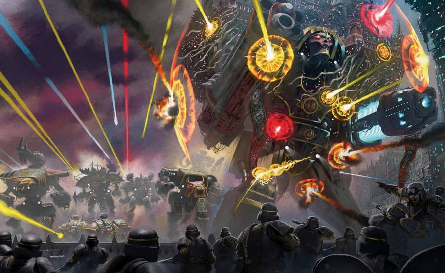

Legio Mortis
| Legio Mortis | |
|---|---|
| The Death's Heads | |
Heraldry of the Legio Mortis as borne in the Horus Heresy Artwork © Games Workshop | |
| Founded | Age of Strife, on Mars (date unrecorded; estimated M25–M29) |
| Type | Titan Legion; one of the Triad Ferrum Morgulus |
| Forge world | Mars (until 005.M31); now the Eye of Terror |
| Allegiance | The Fabricator-General, then Horus (005.M31); Chaos and the Dark Mechanicum |
| Colours | Black with red |
| Strength | About 200 Titans before the Heresy |
| Notable engines | Dies Irae (Imperator); Aquila Ignis (Imperator); Excoriator Vita (Warmaster) |
| Rivals | Legio Ignatum; Legio Tempestus; Legio Venator |
| Notable battles | Ullanor Crusade; Isstvan III; Battle of Beta-Garmon; Siege of Terra; Thirteenth Black Crusade |
The Legio Mortis, the Death's Heads, is a traitor Titan Legion. It was raised on Mars in the Age of Strife as one of the three oldest Legios, served as the personal guard of the Fabricator-General, and was assigned to Horus in the Great Crusade. When Horus rebelled in 005.M31 it followed him, the first Titan Legion to do so. It fought in nearly every great battle of the Horus Heresy and, at the Siege of Terra (013–014.M31), destroyed its old rival the Legio Ignatum and breached the walls of the Imperial Palace.[1][2]
After the Heresy the Legio fled to the Eye of Terror. Its god-engines, changed by the Warp into daemonic shapes, have returned to Imperial space many times since, most recently in the Thirteenth Black Crusade of 999.M41 and the wars of the Era Indomitus.[1]
History
[edit]Origins
[edit]According to the Martian lexmechanics, the Legio Mortis was one of the Triad Ferrum Morgulus, the three Titan Legions raised by the Cult Mechanicus to retake Mars from the Cy-Carnivora and the mutant hordes of the Age of Strife. Its partners were the Legio Tempestus and the Legio Ignatum. Its seal names its two duties: to stand guard at the gates of the Fabricator-General's domain, and to destroy whatever threatened the cult. It kept both. For centuries the Fabricators-General used it to punish rebellious magi and even other Titan Legions, and it was one of the few Legios to have wiped out another entirely.[1]
Its princeps wore onyx skull-masks and black robes, kept exact tallies of their kills, and filled their command decks with servitor choirs that chanted the names of the dead. It is not recorded whether the name "Death's Heads" came from this custom, from the skull of its heraldry, or from the bones it hung on its engines.[1]
The Great Crusade
[edit]The Imperium's commanders distrusted a Legio whose loyalty seemed to lie with Mars alone. Partly to bind it to the Imperium, most of its active strength was assigned to the 63rd Expeditionary Fleet of Horus and his Luna Wolves. It fought in more than a hundred campaigns at his side, among them the Ullanor Crusade (c. 999.M30 – 000.M31). The bond meant to tie it to the Emperor tied it instead to Horus.[1][3]
The Horus Heresy
[edit]At Isstvan III in 005.M31, the Legio Mortis was given the task of finishing the loyalist Space Marines who survived the virus-bombing. Led by the Imperator Titan Dies Irae, it became the first Titan Legion to fight the Adeptus Astartes in open battle. On Mars it sided with Kelbor-Hal in the Schism of Mars (005–006.M31); its contingents there attacked Magma City and were destroyed by the Legio Tempestus, though the Imperator Aquila Ignis killed the last Tempestus engines before it fell.[2][4]
The Legio then fought at the Drop Site Massacre (c. 006.M31), at Prospero, at Tallarn and at Ryza, which it invaded with two other traitor Legios in 013.M31. In the Battle of Beta-Garmon (007–013.M31) it led Horus's final attack on Beta-Garmon III.[2]

The Siege of Terra
[edit]By the Siege of Terra the Legio was deeply corrupted. Its engines regenerated their damage and some moved without a princeps. Led again by Dies Irae, it marched on the Mercury-Exultant killzone of the Palace in 014.M31 and there destroyed the Legio Ignatum, its enemy since the Age of Strife. It was given the honour of breaching the outer walls and did so at the cost of more than thirty Titans in a single night.[5]
When Horus fell in 014.M31 the Legio's survivors were hunted from system to system until they reached the Eye of Terror.[5]
After the Heresy
[edit]Engines of the Legio Mortis have appeared in Imperial space throughout the following ten thousand years. They fought in the First War for Armageddon (444.M41), and Dies Irae was finally destroyed at the siege of Hydra Cordatus in the late 41st millennium. The Legio marched in the Thirteenth Black Crusade (999.M41), on Vigilus (c. 999.M41 – 000.M42) and in the Nachmund war of the early 42nd millennium.[1][6]

Timeline
[edit]| Date | Event |
|---|---|
| Age of Strife (estimated M25–M29) | Raised on Mars as one of the Triad Ferrum Morgulus |
| c. 999.M30 – 000.M31 | Fights with Horus in the Ullanor Crusade |
| 005.M31 | Joins Horus at Isstvan III; supports Kelbor-Hal in the Schism of Mars |
| 013.M31 | Invasion of Ryza; final assault at Beta-Garmon |
| 014.M31 | Destroys the Legio Ignatum and breaches the Palace walls in the Siege of Terra; flees to the Eye of Terror |
| 444.M41 | First War for Armageddon |
| 999.M41 | Thirteenth Black Crusade |
See also
[edit]References
[edit]- ^ a b c d e f McNeill, Graham. Angel Exterminatus (novel). Black Library, Ch. 27, pg. 416. McNeill, Graham. False Gods (novel). Black Library.
- ^ a b c Swallow, James. Flight of the Eisenstein (novel). Black Library. Counter, Ben. Galaxy In Flames (novel). Black Library.
- ^ McNeill, Graham. Storm of Iron (novel). Black Library. McNeill, Graham. Mechanicum (novel). Black Library.
- ^ McNeill, Graham. Vengeful Spirit (novel). Black Library. Sanders, Rob. Cybernetica (novella). Black Library.
- ^ a b Series), Alan Bligh (Forge World. The Horus Heresy - Book One: Betrayal. Black Library, pp. 138-141. Series), Alan Bligh (Forge World. The Horus Heresy - Book Seven: Inferno. Black Library, pp. 25, 46, 50, 101, 108-111, 176, 179, 182-183.
- ^ Titan Legions (2nd Edition), pg. 12. Games Workshop. Adeptus Titanicus (1st Edition), pg. 59. Games Workshop.